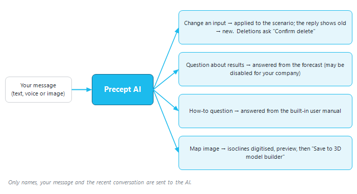

|
|
Precept AI — the built-in assistant
1. Overview
Precept AI is the assistant built into Precept. You talk to it in plain English, by typing or, where it is set up, by voice. It comes in two windows:
•The Precept AI assistant ("Precept AI" on the main ribbon). It changes forecast inputs for you, explains forecast results, answers how-to questions from this manual, and can digitize a structure map for the 3D model builder (sections 3 to 8).
•Precept AI charts ("Precept AI" and "My Custom charts" in the Field Monitoring window). It turns a question about your production data into a chart, a table, a map or a single number, and lets you save charts and build dashboards (section 9).

Figure 1 — What happens to a message sent to the Precept AI assistant.
2. Availability
Precept AI is activated per company. If it is not activated for yours, clicking "Precept AI" opens a short "Precept AI" window instead of the assistant. That window explains that the feature is powered by Claude and that it must first be approved by your IT department. Once it is approved, ask Cleverfield support to activate it.
Some capabilities can also be switched off for your company. For example, results analysis may be disabled to keep forecast results on your premises (section 5).
3. Using the assistant
1.Select the asset, project and scenario you want to work on in the main window. You can also ask the assistant to do it, e.g. "switch to the Base Case scenario".
2.Click "Precept AI" on the main ribbon. The "Precept AI - Assistant" window opens in the bottom-right corner of the screen and greets you with what it can do.
3.Type your request in the box at the bottom ("Ask a question, or tell me a change to make…"). Press Enter to send it, or Alt+Enter to start a new line.
4.Read the reply. A change that has been applied is confirmed with "Done - …", showing the old and new values.
Good to know:
•The assistant always works on the scenario selected in the main window. If you select another scenario while the chat is open, it switches to that scenario automatically.
•As you type, the names it recognises (wells, nodes, sequences, opportunities) are highlighted in blue. A name that does not turn blue may be misspelled.
•It remembers the recent conversation. You can answer its follow-up questions (for example, the reason for a shutdown) or refine the last request ("make it monthly").
•While it is working, "Thinking…" is shown. If it takes more than a few seconds, a progress bar and a "◼ Stop" button appear in the header; click "◼ Stop" to cancel.
•Ctrl + mouse wheel enlarges or reduces the chat text. Right-click a message for "Copy this message" or "Copy whole conversation".
•Drag the window's edges to resize it. Use "—" to minimise it and "×" to close it.
4. Changing forecast inputs
Describe the change in your own words. Several changes can be given in one message; they are applied in order. The table lists what the assistant can change, with example requests.
|
Area
|
What it can do — example requests
|
|
Sequences (rigs) and opportunities
|
Change a sequence start date ("move the drilling start of Rig 1 to January 2029"). Add, rename or remove a sequence ("add a new rig called Rig 3"). Schedule a well from the pool onto a rig, move it to another rig, before or after another well, or move all opportunities to a rig. Send an opportunity back to the pool. Change an opportunity's duration ("set the duration of P-12 to 45 days").
|
|
Constraints
|
Set or remove a process constraint at a node: Liquid, Oil, Water, Gas, Gas-lift, Total Gas, Water Injection, Gas Injection, Oil storage, Uptime, Min Pressure or Max Pressure ("limit the water at Platform A to 20000"; "5% downtime at the FPSO" sets Uptime to 0.95). Add or delete a time-varying constraint (see Constraints vs time).
|
|
Shutdowns
|
Add a shutdown on a well or node — one-off or recurring, on fixed dates or tied to the start or end of an opportunity ("add a shutdown on Platform A for 10 days in July every year"). For a well, the assistant asks for the reason if you did not give one. Delete a shutdown. See Shutdowns.
|
|
Wells and conversions
|
Add one or more wells, with type, outlet node, reservoir and project. A new well to be drilled also gets a drilling opportunity. Delete or rename a well. Convert a well to Oil Producer, Gas Producer, Water Injector or Gas Injector ("convert P-01 to a Water Injector"), or delete a conversion. See Well conversion.
|
|
Assets, projects, scenarios
|
Create an asset or a project. Create, rename, duplicate or delete a scenario. Import a scenario from Excel (a file picker opens). Switch to another asset, project or scenario.
|
|
Settings and forecast
|
Change a forecast setting of the scenario ("set the oil price to 70", "use material balance for this scenario"). Change the forecast start or end date. Include or exclude a project in the forecast. Change the colour of a project or an opportunity. Run the deterministic forecast ("run the forecast"). See Settings.
|
|
Material balance
|
Set a reservoir property — STOOIP, OGIP, initial pressure, temperature, Rs, porosity, connate water, rock compressibility, aquifer size and productivity index, thickness, permeability, kv/kh, oil or gas reservoir ("set the porosity of Main to 0.22"). Save the open Material Balance window. Add a control point to the relative-permeability tables. See Material Balance.
|
|
Open a window
|
Material Balance data, PVT data, Decline Curves, Probabilistic distributions, network constraints, Add/Remove wells, import/duplicate profiles, Add/Edit Opportunity, Well Inflow, Set Well Geometry (well completion or deviation), VLP generation for a well ("generate the VLP of P-03").
|
|
Display
|
Open the Forecast Results window, or plot a result for one or more wells or nodes ("plot the oil forecast for P-03 monthly with history", then "show it as a bar chart"). Show the raw forecast table, the historical data, the over/under-performing view or the analogues. Open the export-to-Excel window. Zoom the timeline in or out, view all of it, show or hide it. Show or hide the pool of opportunities.
|
4.1 How changes are applied
•Changes are written straight to the selected scenario — there is no preview window. The main window is then refreshed, and the reply states the old and new values. Read it to check that the change is the one you meant.
•Deletions always ask first: removing a sequence, or deleting a shutdown, a conversion, a time-varying constraint, a well or a scenario, opens a "Confirm delete" window.
•Names must exist in the scenario. If a name is not found, the assistant says so and changes nothing. If a request is ambiguous (for example, which constraint to change), it asks you to clarify.
•There is no undo. To revert a change, ask for the opposite change, or edit the input in its usual window. For a large change, consider duplicating the scenario first.
5. Asking about forecast results
Once the scenario has been run, you can ask about its results:
•About one well or node: "why is well P-02 shut-in in 2032?", "is any constraint hit at the Process facilities, and when?". The answer is based on that node's results and on the constraints that apply to it.
•A field-wide figure or list: "what's the total cumulative oil at the end of the forecast?", "which wells are shut-in in 2030?".
If results analysis is disabled for your company, the assistant replies that analysing forecast results isn't available yet. This keeps your forecast results on your premises.
6. How-to questions
Ask how to do something in Precept: "how do I add a constraint?", "where do I enter the PVT?". The assistant answers from a copy of this user manual that is built into Precept. It gives the on-screen names and the steps, and when a manual page fits it ends with a "Documentation:" line and the link. If the manual does not cover the question, it says so rather than guessing.
The built-in copy is updated with each Precept release, so a very recent change to the manual may not be known yet.
7. Digitizing a structure map
The assistant can read a structure (isocline) map image and turn its contours into inputs for the 3D model builder of the selected scenario:
1.Click the paperclip in the input box ("Attach an image (e.g. a structure map) - or paste one with Ctrl+V"), or paste the image with Ctrl+V.
2.Send "Digitize the isoclines of this map". Sending the image alone does the same. The map needs readable coordinates on its axes. If it has none, the assistant asks for its size or for two coordinates. Contour depths are read as positive TVDSS, in the scenario's length unit.
3.Check the preview in the "Precept AI - check the digitized isoclines" window. The magenta crosses are the two reference points used to place the map.
4.Click "Save to 3D model builder" to keep the result, or "Cancel".
See Simulation for the 3D model builder.
8. Voice input
When the speech model has been installed on your computer, a microphone button appears in the input box. Click it to start recording (it turns red), then click it again to stop. The recording is transcribed ("Transcribing…") and the text is placed in the box. Check it, then press Enter to send. Transcription runs on your computer and no audio leaves it. If the button is missing, voice input is not installed on this computer — ask your administrator.
9. Precept AI charts (Field Monitoring)
In the Field Monitoring window, "Precept AI" opens a window with two tabs: "Build a chart" and "My Dashboard".
1.Type a question about the asset's data, e.g. "top 3 producers with the biggest oil-rate drop over the last 3 months". Press Enter or click "Run".
2.Precept AI writes a read-only database query, runs it and shows the query, the data table and the result. The result is a line, bar, scatter or pie chart. A single figure is shown as a large number, and per-well results can also be shown on a map ("Both", "Map only", "Chart only").
3.Refine with follow-up questions, e.g. "add the water rate to that chart".
4.Click "Save" to keep the chart. A saved chart stores the question and the query, not the data, so reopening it shows current values. "Add chart" pins the chart onto a dashboard. "Reset" clears the question, chart and table.
5."My Custom charts" (in this window, or directly on the Field Monitoring ribbon) lists your saved charts and dashboards: "Open", "Edit" (rearrange a dashboard) or "Delete".
"Talk" dictates the question using the Windows speech recogniser. If none is installed, the status line says "No speech recognizer installed.". Saved charts and dashboards are stored in your Windows user profile on this computer. This window only reads data; it never changes anything.
10. What Precept AI cannot do
•It only makes the changes listed in section 4, and only on the selected scenario. It cannot run database commands of its own, edit decline-curve fits, or run a probabilistic forecast (it can open the relevant windows).
•It does not see your screen. It knows only the names in the scenario, the conversation, and the data it reads for a results question.
•It can misunderstand a request. Always read its reply, which states what was changed.
•Results questions need a forecast run, and may be disabled for your company. Map digitizing needs a map with readable coordinates.
11. Privacy
•To understand a request, the assistant sends the AI service your message, the recent conversation, the scenario name and the lists of names in the scenario (sequences, opportunities, nodes, wells, reservoirs, settings, assets, projects, scenarios). It does not send production history to make a change.
•A results question also sends the result figures needed to answer it, which is why that capability can be disabled. An attached image is sent to be read.
•For Precept AI charts, the question, the conversation and the structure of the database (table and column names, and the asset's well list) are sent. The query itself runs inside your company's network, and the rows it returns are not sent to the AI service.
•Voice transcription in the assistant runs entirely on your computer.
•The AI connection is set up and secured by Cleverfield. You never handle keys or service addresses.
|
|